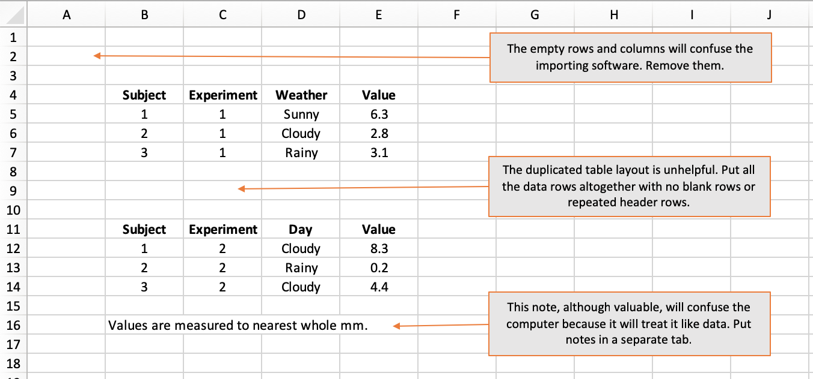
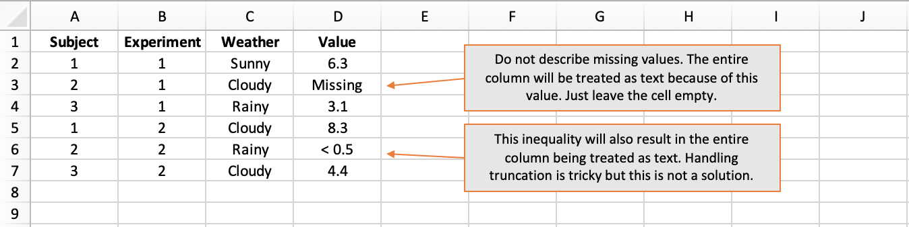
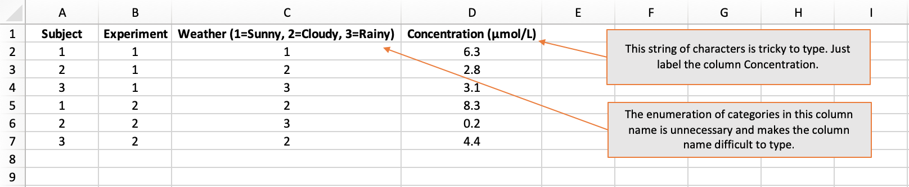
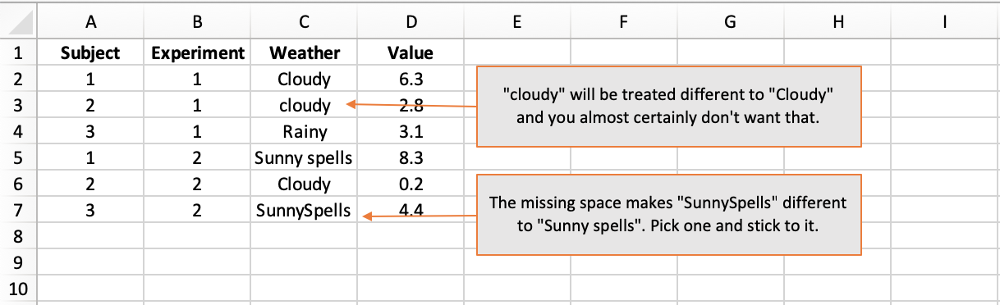
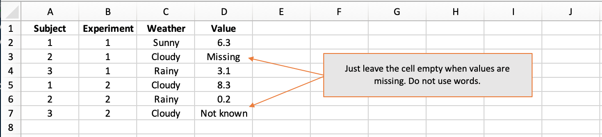
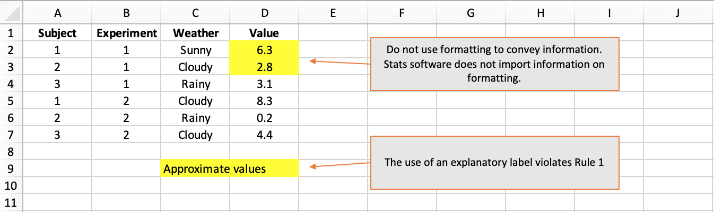
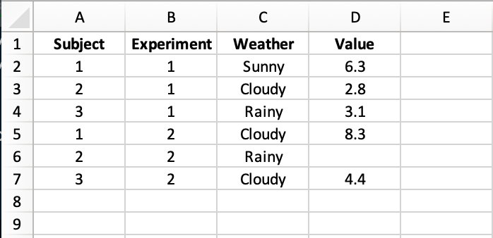

I collaborate with lots of different researchers, helping them to analyse their data. For simplicity, they almost always send me data in an Excel spreadsheet. That is fine, but it is evidently not clear to most how to lay out the data to facilitate statistical analysis.
Before I can analyse the data, I have to import it. The way the data is saved really impacts how easy or hard it is to import. There are some common mistakes that lots of researchers make. The goal of this post is to describe how to lay out data in Excel so that it can be imported into R and analysed immediately.
When importing data from Excel, what the computer expects is a solid rectangle of data starting in cell A1. Empty rows and columns may make the data more visually appealing to a human but they are guaranteed to confuse a computer.
Put your first column header in cell A1, your second column header in B1, and so on. Then put your data in the subsequent rows, using one row for each observation or subject.
The computer will import values from cells as far out as the last non-empty column and as far down as the last non-empty row. This means you cannot slap explanatory notes below your block of data because, to a computer, your note looks like malformed data. If you want to provide notes, put them on a dedicated tab.
How not to do it: 
Broadly speaking, we work with numbers, text, and dates (which are in fact just a special type of number).
When software imports data in columns, it works out the type of the column by inspecting the values in the individual cells. If every value in a column is a number, then the column will be treated as numerical. That is great because analysis (like calculating an average) can proceed with no fuss.
However, all it takes is a single textual value in a column of otherwise numerical values for the entire column to be treated as text. This is because the datatype chosen for a column has to be valid for every value in the column and text is the catch-all scenario. If your column contains numbers, do not label missing values as “missing” or “not known” - just leave them blank.
Equally, do not use inequalities like “< 0.5” because this too will be read as text and result in the entire column being treated as text. The case with inequalities is tricky and could perhaps be handled gracefully using separate columns for the observed value and the lower and/or upper thresholds of precision, where applicable.
How not to do it: 
Column names must be unique. You cannot have two columns called “Data”, for instance. Thus, meaningful column names with an appropriate level of detail are important. However, column names should not be too complex. This is because they will have to be typed out when the column is used in the analysis. Each time a column name is typed, the chances of an error increase.
Common examples of excessively complex column names are those that:
I advise that column names:
Capturing data from questionnaires can be tricky because there is a temptation to name the columns using the question text. This will almost surely result in cumbersome column names. In this situation, columns names “Q1”, “Q2”, etc are fine. However, it would be advisable to also include a data-dictionary tab where the exact question text is listed against the question number.
How not to do it: 
When entering column names and textual data values, be aware that:
In Rule 3, I advocated not putting the levels of categorical variables in the column header because it is too prone to error. It is absolutely fine to use descriptive textual labels like “Rainy” and “Sunny” rather than codified numerical values. But when you choose your category values, stick with them. Subtle ways in which categorical variables frequently differ are in capitalisation and use of space.
If you want to codify categorical variables, that is fine but you it is advisable that you also include a data-dictionary tab where the codified values are listed against their textual values.
How not to do it: 
In Rule 2, I told you not to label missing values. An empty cell is absolutely fine. If an particular piece of information is missing, just leave the cell empty.
How not to do it: 
Researchers like to use cell shading to group related columns and make their data sheets easier to navigate. That is absolutely fine…but do not expect stats software to detect your colouring, much less to understand what it means.
In particular, do not convey important information in the formatting. It will not work to use red shading or italics to convey approximate vs exact values, for instance. All information should be conveyed in a dedicated column. In this example, a column named MeasurementType taking values “Exact” and “Approximate” would be warranted.
How not to do it: 
Obey all of those rules and you should come up with something that looks like this:

An Excel sheet like this can be loaded into R and visualised or analysed immediately with no relabelling of columns, no re-casting of data-types, no data rejigging. Make your data easier to analyse to get the analysis back quicker.